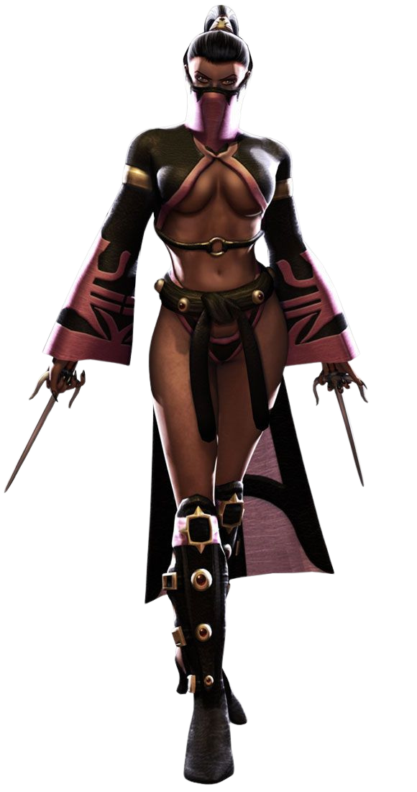
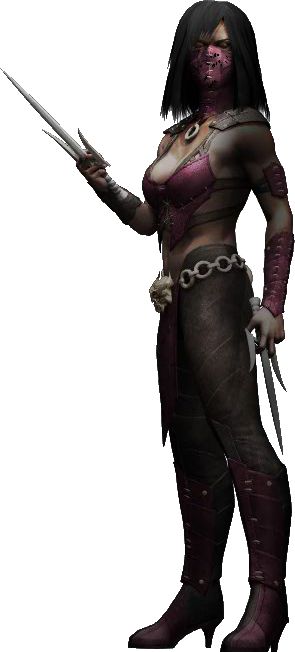
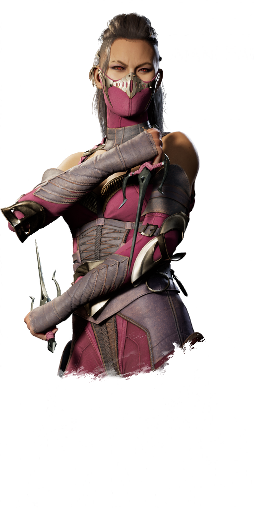
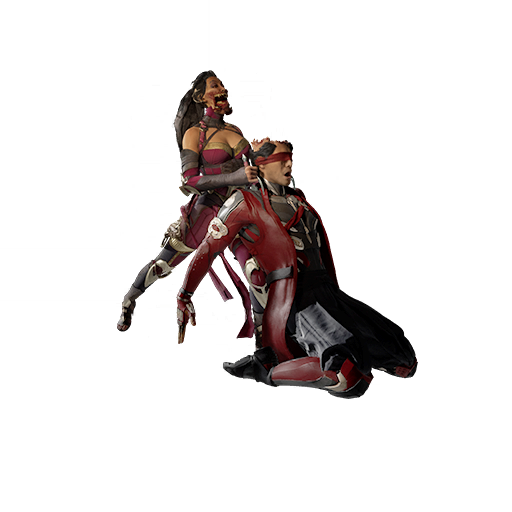
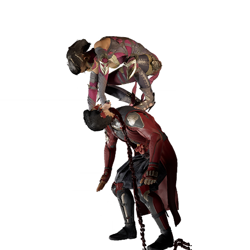

História da Mileena
Linha do tempo original:
Mileena é um clone híbrido mutante de Kitana, criado nos poços de carne de Shang Tsung a mando de Shao Kahn, que estava cada vez mais paranóico de que Kitana um dia descobriria a verdade sobre seus pais e o trairia. Sendo uma fusão de sangue Tarkatan (um dente do Baraka) e fisiologia Edeniana (uma mecha de cabelo da Kitana), Mileena combina e utiliza totalmente os atributos de ambas as raças em combate, ostentando velocidade incrível, força bruta, destreza acrobática ágil e selvageria assustadora e carnívora igualada apenas por Baraka.
Por mais que sua primeira aparição seja no Mortal Kombat 2, sua história começou muito antes. Vivendo com seu esposo verdadeiro, chamado Jerrod, Sindel governava o reino de Edenia ao lado de sua filha Kitana. Tudo mudou, no entanto, quando Shao Kahn tomou tudo à força com um torneio Mortal Kombat. Ele assassinou Jerrod, se casou com Sindel e cuidou de Kitana como sua própria filha, a treinando para mais tarde se juntar ao exército dele. Sindel enfeitiçou Shao Kahn em troca de sua própria vida, prendendo-o na Exoterra.
Sentindo a necessidade de ter uma herdeira fiél, Shao Kahn ficou preocupado com a ideia da Kitana descobrir a verdade. Ele pediu ao Shang Tsung para criar uma filha, juntando o DNA da Kitana e dos Tarkatans, a raça do Baraka. Após algum tempo, Kitana descobriu a verdade sobre seus pais e sua suposta irmã, então ela se revolta contra a Exoterra e o Shao Kahn, que manda o Baraka, o Reptile e a Mileena atrás da garota. As irmãs se encontram e travam uma batalha a qual Kitana sai vitoriosa, derrubando Mileena de uma ponte e matando-a.
Após sua morte, Mileena acorda no Submundo, onde sua alma forte e valiosa não passou despercebida aos olhos de Shinnok. Ele propõe a ela a oportunidade de invadir Edenia e se livrar de Kitana, concedendo à Mileena o poder de ler a mente de sua irmã durante a batalha que aconteceu no Palácio de Edenia. Enquanto isso, Shinnok foi derrotado por Liu Kang, fazendo Mileena ser derrotada novamente por Kitana e mais tarde morta arremessada de cima de uma pirãmide por Shang tsung.
Em austero contraste com Kitana, Mileena é uma oportunista má, sádica, cruél, conturbada, temperamental, egoísta e psicologicamente desequilibrada cujo maior desejo é matar sua irmã e revindicar sua própria existência para si mesma.

Linha do tempo alternativa:
Quando Shao Kahn foi morto por Raiden, Mileena assumiu o cargo de governante da Exoterra. Mas quando se recusou a alinhar a Exoterra com o Plano Terreno contra o ataque de Netherrealm, ela foi detida. Ela agora lidera uma rebelião contra o regime do usurpador do Kotal Mileena,enfurecida,diz que preferia morrer em vez de negociar com os assassinos de seu pai. Para Kotal Kahn, Mileena colocava todos em perigo. Mileena se conteve e deu uma breve explicação sobre traição e arrancaria a língua de Kotal Kahn caso ele ousasse tentar algo.
Reptile logo interferiu dizendo que ela não era a verdadeira herdeira do trono de Shao Kahn, pois ela não passava de uma construção criada por Shang Tsung nos Poços de Carne e não poderia suceder Shao Kahn de forma alguma. Kotal Kahn afirmou que Mileena sucedeu Shao Kahn, mas a Exoterra exigia uma nova liderança. Mileena não deu ouvidos a ele e mandou seus guerreiros atacarem o imperador. Baraka deu o golpe inicial, mas D'Vorah o impediu dizendo que ela não servia mais a imperatriz Mileena e atacou o Tarkatan.
Mileena e D'Vorah entraram em um combate onde D'Vorah saiu vitoriosa. A herdeira de Shao Kahn foi então entregue ao imperador. Ela pediu para Kotal Kahn acabar com a vida da mesma, para que ela pudesse finalmente se juntar ao seu pai. Assim, Mileena foi morta com o beijo de vespas de D'Vorah.

Linha do tempo atual:
Diferentemente das outras linhas do tempo, na atual Mileena é alinhada ao bem, e não ao mal, e ainda está viva. Ao reiniciar a linha do tempo, Liu Kang projetou os destinos de cada habitante, incluindo seus antigos e amados amigos e aliados. Assim como seus inimigos. Mileena costumava ser o clone de Kitana. Mas agora na Nova Era, Liu Kang a refez para ser a verdadeira irmã que Kitana merece, além de ser filha de Sindel e Jerrod. No entanto, em vez de ser meio-Tarkatan, Mileena acabaria sofrendo de uma doença que lhe daria características Tarkatan.
Após o assassinato injusto de Jerrod, Li Mei renunciaria aos Umgadi em desgraça, deixando os laços entre ela e a família real quebrados. Substituindo sua posição estava Tanya, com quem Mileena formou um forte vínculo e um relacionamento romântico secreto, apesar de saber que os Umgadi eram proibidos de ter tais conexões. A chegada de um feiticeiro chamado Shang Tsung ajudou a aliviar as batalhas diárias de Mileena com sua doença Tarkat, pois ele foi de alguma forma capaz de desenvolver um supressor para ela;
Mileena é vista pela primeira vez na história com Kitana e os Umgadi, esperando no portal do Earthrealm em Sun Do para dar as boas-vindas a Liu Kang e seus campeões em Outworld para o torneio inter-realm (entre reinos). A ânsia de Mileena em participar é interrompida durante o banquete noturno, no qual ela sente uma dor de estômago. Tanya a verifica, preocupada que possa ser o Tarkat da princesa se manifestando, mas Mileena insiste que ela está bem. Tendo observado de longe, Sindel pensa o contrário e, mais tarde, chama Mileena e Kitana para seus aposentos. Mileena novamente protesta que seus males não foram resultado de Tarkat, mas Sindel diz que não pode arriscar e decide fazer Kitana lutar no torneio no lugar de Mileena. Mileena fica horrorizada com a decisão, mas Sindel a lembra que ela é muito impulsiva e que contraiu a doença como resultado de deixar o palácio sem supervisão.
Em um batalha contra Dark Sindel, a mãe das gêmeas morre. Dark Sindel zomba de Mileena, dizendo que é sempre triste ver uma criança perder sua mãe, mas Mileena a avisa com raiva que se Sindel morrer, ela garantirá que ela não seja a única Sindel que perecerá. Fiel às suas palavras, Mileena derrota Dark Sindel em seu frenesi, antes de desmaiar de exaustão. Tanya entrega o supressor para retornar Mileena ao seu estado normal, mas Sindel não pode ser salva. Toda a sua família se desespera com a perda, mas Sindel é grata por eles terem tido mais algumas horas juntos e coroa Mileena imperatriz antes que ela morra.
A atual Mileena se torna Imperatriz após a morte de Sindel, e rapidamente começa a reformular várias posições - Kitana assume o lugar de Shao como general.
Fatalities da Mileena

Fatality 1/Appetizer: trás, frente, trás, quadrado.
Fazer isso fará com que Mileena esfaqueie seu oponente no pescoço com seu sai para deixá-lo de joelhos. Depois disso, ela mastiga o topo da cabeça e come o cérebro como lanche antes de morder o resto da cabeça. É tudo muito nojento, mas combina muito com a personagem de Mileena.
Fatality 2: baixo, frente, trás, X.
Se executado corretamente, Mileena abrirá o estômago de seu oponente usando seu sai antes de esfaqueá-lo em ambas as orelhas. Ela então vira a cabeça deles completamente, pula em seus ombros e arranca a cabeça antes de jogá-la insensivelmente no chão à sua frente. Enquanto o cadáver decapitado de seu ex-rival jaz sem vida no chão, Mileena faz uma pose com seu lutador Kameo escolhido.
